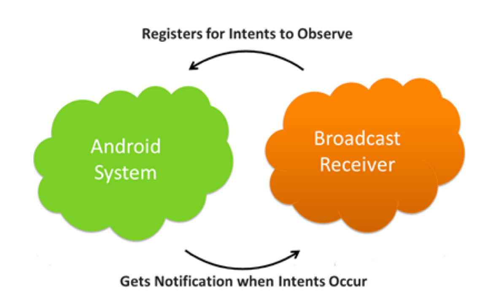
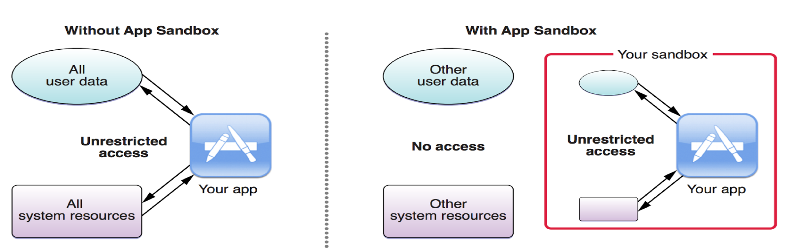
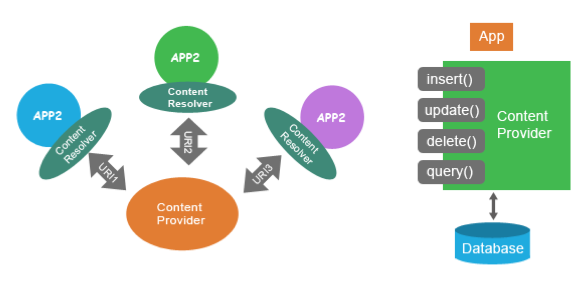

- Android Platform
- Protect user data
- Protect system resources (including the network)
- Provide application isolation
- Robust security at the OS level through the Linux kernel
- Mandatory application sandbox for all applications
- Secure interprocess communication
- Application signing
- Permissions
- Linux Security
- A user-based permissions model
- Process isolation
- Extensible mechanism for secure IPC
- The ability to remove unnecessary and potentially insecure parts of the kernel
- Prevents user A from reading user B's files
- Ensures that user A does not exhaust user B's memory
- Ensures that user A does not exhaust user B's CPU resources
- Ensures that user A does not exhaust user B's devices (e.g. telephony, GPS, bluetooth)
- The Application Sandbox
- A user-based permissions model
- Process isolation
- Extensible mechanism for secure IPC
- The ability to remove unnecessary and potentially insecure parts of the kernel
- Prevents user A from reading user B's files
- Ensures that user A does not exhaust user B's memory
- Ensures that user A does not exhaust user B's CPU resources
- Ensures that user A does not exhaust user B's devices (e.g. telephony, GPS, bluetooth)
- Personal Information
- SIM Card Access
- Cost Sensitive APIs
- Telephony
- SMS/MMS
- Network/Data
- In-App Billing
- NFC Access
- With Android 4.2, the user gets a notification when the SMS feature is used, then user decides to whether send the message or not.
- Sensitive Data Input Devices
- GPS
- Camera
- Microphone
- Device Metadata
- Operating system logs
- Browser history
- Phone number
- Hardware / network identification information
- Application Signing
- Signing allows developers to identify the author of the application.
- Every application must be signed, otherwise it will be rejected
- Application signing is the first step for the application sandbox.
- Application signing ensures that one application cannot access any other application except through well-defined IPC
- Do not sign the application with a publicly known key
- Do not sign with the platform key
- Applications with the same package name should not be signed with the different keys
- Never ever forget your keystore. Send it via email to yourself to keep it. If you lose your keystore, you won't be able to get it back and you cannot update your application anymore.
- Storing Data - Internal Storage
- By default, files that you create on internal storage are accessible only to your app
- Avoid MODE_WORLD_WRITEABLE or MODE_WORLD_READABLE
- Use content provider for share
- Consider Encryption for additional protection
- Storing Data - External Storage
- Globally readable and writeable
- Always perform input validation
- Do not store executables or class files
- Always retrieve signed and verified files.
- Storing Data - Content Providers
- You can set export option to provide data to other applications or not. (android:export in manifest file). The default value is "true" for applications that set either android:minSdkVersion or android:targetSdkVersion to "16" or lower. For applications that set either of these attributes to "17" or higher, the default is "false".
- Use signature protection level to limit with your own apps.Signature protection: Only the applications which are signed by the same key can access
- Use parameterized query methods such as query(), update(), delete to avoid SQL injection
- Do not use content provider if you will use only in your app.
- Always set export atribute.
- Shared Preferences
- Shared preference is an xml file which stored in the application directory. (/data/data)
- They can be read easily with the root priviliges. Because of that, do not store any sensitive information in there.
- Without root priviliges, no other application can access that area. It is protected by the application sandbox.
- Use crypto if you need to store an information which might be sensitive such as bank account number etc.
- Data is stored as key/value pair. Make your keys to hard to understandable such as random characters. Such as KEY_NAME = "asdfadsf"
- Android Resources/Assets
- Do not store any sensitive information in the resources/assets such as keystore key etc. They can be read and accessed easily.
- Using Permissions
- Minimize the permission request.
- Do not request unless you really really need it
- Do not leak permission-protected data.
- Use permissions to protect IPC. This occurs when your app exposes data over IPC that is only available because it has a specific permission
- Using IP Networking
- Use of HTTPS over HTTP anywhere that HTTPS is supported on the server.
- Do not trust data downloaded from HTTP or other insecure protocols.
- To interact to another application always use android interprocess mechanisms
- Using Telephony Networking
- SMS is neither encrpyted not strongly authenticated.
- SMS messages are transmitted as broadcast intents, so they may be read or captured by other applications that have the READ_SMS permission.
- Consider using GCM or IP Networking for data transfer
- Performing Input Validation
- Beware of script injection such as javascript and SQL
- Use parameterized queries to avoid injections
- Always verify the format
- Beware of potential secure issues when using native code.
- Handling User Data
- Minimize the use of APIs that access sensivite data
- Consider hash/non-reversible form of the data when storing such as md5
- Do not expose user data to other apps such as IPC, store to external storage, network etc
- If a GUID is required, use UUID. Do not use phone identifiers.
- Do NOT log these data
- Using WebView
- Beware of cross-site-scripting (Javascript), because webview consume web content
- Do not call setJavaScriptEnabled() if your app does not directly use JavaScript. By default, WebView does not execute JavaScript
- Use clearCache() when accessing sensitive data
- Use addJavaScriptInterface() with particular care because it allows JavaScript to invoke operations that are normally reserved for Android applications. If you use it, expose addJavaScriptInterface() only to web pages from which all input is trustworthy.
- Handling Credentials
- Minimize the frequency of asking for user credentials, use authorization token and refresh it
- Where possible, do not store username and password in the device
- Perform initial authentication using the username and password supplied by the user, and then use a short-lived, service-specific authorization token.
- Use account manager to prevent pass credentials to wrong application
- Consider KeyStore for storage
- http://developer.android.com/training/articles/security-tips.html#WebView
- http://developer.android.com/reference/android/accounts/AccountManager.html
- Using cryptography
- Do not implement your own cryptographic algorithms. Android provides a wide array of algorithms for protecting data using cryptography.
- Use AES or RSA
- Use a secure random generator, (SecureRandom)
- Use KeyStore if you need to store a key for repeated use
- Use the highest level of pre-existing framework implementation
- Consider using HttpsURLConnection or SSLSocket, rather than writing your own protocol.
- http://developer.android.com/training/articles/security-tips.html#Crypto
- http://en.wikipedia.org/wiki/Advanced_Encryption_Standard
- http://en.wikipedia.org/wiki/RSA_%28cryptosystem%29
- http://docs.oracle.com/javase/7/docs/api/java/security/MessageDigest.html
- Using Interprocess Communication
- When you need to communicate with another application use android system functionality such as Intent, Binder or Messenger with a Service, and BroadcastReceiver.
- The Android IPC mechanisms allow you to verify the identity of the application connecting to your IPC and set security policy for each IPC mechanism.
- If your IPC mechanism is not intended for use by other applications, set the android:exported attribute to "false" in the component's manifest element, such as for the service.
- Using Broadcast Receivers 
- Intents are the preferred mechanism for asynchronous IPC in Android by using broadcast receivers.
- Set export atribute to receivers. By default, receivers are exported
- Consider applying a permission to make sure the malicious apps cannot receive.
- Use LocalBroadcastManager for internal broadcast.
- Make input validation when you consume a broadcast.
- Using Services
- Always set exported attribute, by default it is false.
- Always use permissions to limit to access
- Use checkCallingPermission() before executing the call
- Using IPC - Binder and Messenger Interface
- Preferred for RPC-style IPC
- Use checkCallingPermission() to verify whether the caller has a required permission
- Binder and Messenger objects are not declared in manifest, therefore you cannot apply permissions
- If calling an interface provided locally by your own application, it may be useful to use the clearCallingIdentity() to satisfy internal security checks.
- http://developer.android.com/training/articles/security-tips.html#IPC
- http://stackoverflow.com/questions/6686686/android-binder-security
- Dynamically Loading Code
- Do not load code from outside
- The code runs in the same permissions as the application
- Verify the source if you need to load
- Logging
- Logs are a shared resource
- Do not log sensitive data such as user name, credit card, password etc
- Do not log data provided from 3rd parties. You don't know the content, thus don't expose it.
- Remove debug logs in release version by using proguard
- Use Proguard
- Obfuscate your code, thus it makes hard for reverse engineering
- Removes your debug logs
- Decrease the size
- Optimizes slightly.
- Security with HTTPS and SSL
- Anyone can generate their own certificate and private key, simple handshake does NOT prove that it is secure.
- Use certificate authorities (CA)
- Android 4.2 currently contains over 100 CAs.
- Android uses blacklisting. Certain certificates or even whole CAs are prevented.
- Use pinning. Restrict an app's trusted CAs, An app can further protect itself from fraudulently issued certificates by a technique known as pinning
- Client certificates : SSL also supports the notion of client certificates that allow the server to validate the identity of a client.
- Be aware of reverse engineering
- The application apk can be exported easily. Apk itself is a zip folder and it is very easy to extract it.
- Reverse engineer can be done easily to the apk by using apktool. Apktool is a tool for reverse engineering 3rd party, closed, binary Android apps. It can decode resources to nearly original form and rebuild them after making some modifications; it makes possible to debug smali code step by step. Also it makes working with app easier because of project-like files structure and automation of some repetitive tasks like building apk, etc.
- Be aware of app licensing
Android is open source and designed with a flexible multilayer. Android seeks to be a secure platform for the users, thus Android seeks to
To accomplish a secure application, Android provides:
Read list
Android is built on linux kernel and it's been around for a long time, because of that linux kernel has been maintained and fixed and made stable. Linux kernel provides several key security features:
Linux is a multiuser operating system and linux kernel isolate user resources from another one another for the security reasons. Linux aim to protect user data, thus linux:
Read list
The android platform uses the linux user-based protection model to isolate one application from the another. In linux, multiple applications can run with the same user permission. But android assigns a unique user id (UID) to each application and run it in a separate process. Each application is like a user
This sets up a kernel-level Application Sandbox. The kernel enforces security between the applications and system at the process level by using linux features. By default, applications cannot interact with eachother and they have limited access to system resources.
The application sandbox is in kernel, thus it extends to native code and operating system applications as well. All runs within the application sandbox
Linux is a multiuser operating system and linux kernel isolate user resources from another one another for the security reasons. Linux aim to protect user data, thus linux:
Read list
Access to sensitive user data is available only through protected APIs

Read list
Low level access to the SIM card is not available to third-party apps. The OS Handles all communication with the SIM Card.
Read list
Cost sensitive means using them might generate cost, thus android provides a protection in OS level. Applications must grant explicit permission to use these APIs.
Tips:
Read list
Applications must grant an explicit permission to use input devices such as:
Read list
Device information might contains user information, thus applications must grant to access :
Read list
Tips:
Read list
Read list
Read list
A structured storage mechanism. You must register it within manifest file.
Tips:
Read list
Read list
Read list
Read list
Read list
Read list
Insufficient input validation is one of the most common security problems affecting applications, regardless of what platform they run on.
Read list
Read list
Read list
Read list
Read list
Read list
Read list
A Service is often used to supply functionality for other applications to use. Each service class must have a corresponding declaration in its manifest file
Read list
Read list
Read list
Read list
Read list
Read list
Read list
Google Play offers a licensing service that lets you enforce licensing policies for applications that you publish on Google Play. With Google Play Licensing, your application can query Google Play at run time to obtain the licensing status for the current user, then allow or disallow further use as appropriate.
Read list